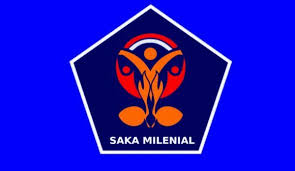

Sejak awal dibentuknya Gerakan Pramuka, organisasi ini menjadi sarana pembentukan karakter bagi generasi muda Indonesia. Dengan mengutamakan sikap disiplin, gotong royong, cinta alam, serta tanggung jawab, Pramuka tumbuh sebagai organisasi pendidikan non-formal yang dikenal banyak masyarakat. Pramuka memiliki peran penting dalam membina generasi muda yang tidak hanya cerdas secara intelektual, tetapi juga kuat secara mental dan memiliki akhlak yang mulia.
Pramuka biasanya identik dengan kegiatan di alam terbuka, seperti berkemah, tali-temali, api unggun, atau kegiatan mengembara dan kegiatan sosial di masyarakat. Namun, seiring berkembangnya zaman, manusia banyak berinteraksi melalui gawai, media sosial, dan berbagai platform online. Pramuka juga harus ikut menyesuaikan diri dengan dunia digital. Kini, Pramuka tidak hanya tentang berkemah atau berpetualang di hutan, tapi juga bisa berperan aktif di dunia maya.
Pada era digital ini, Pramuka sebagai organisasi yang menjadi wadah bagi para generasi muda memiliki peran yang sangat penting dalam dunia digital. Generasi muda yang kesehariannya tidak terlepas dari teknologi hendaknya dapat memanfaatkan teknologi dengan bijak. Pramuka dapat menjadi jembatan bagi generasi muda untuk memanfaatkan teknologi digital dengan baik. Saat ini, Pramuka mendukung perkembangan teknologi untuk para generasi muda mengembangkan minat dan bakatnya dengan membentuk satuan karya bernama Saka Milenial.

Saka Mitra Inovasi dan Literasi Teknologi Informasi Digital (Saka Milenial) adalah satuan karya yang dibentuk sebagai wadah peningkatan keterampilan di bidang Teknologi Informasi, Komunikasi, dan Komputer. Terdapat 5 Krida yang ada dalam satuan karya ini, yaitu:
- Krida Literasi Digital dan Internet
- Krida Kreasi Animasi dan Multimedia
- Krida Inovasi Perangkat Lunak
- Krida Telemetri dan Robotika
- Krida Teknologi Jaringan dan Big Data
Dengan adanya Saka Milenial, diharapkan generasi muda Indonesia dapat mengembangkan minat dan bakatnya di bidang teknologi dan menerapkannya dalam kehidupan untuk kemajuan bangsa dan negara. Selain itu, Pramuka juga dapat memberikan edukasi kepada generasi muda tentang pentingnya etika dalam bermedia sosial, penggunaan internet yang aman, serta cara melingungi diri dari bahaya penyebaran berita hoax. Dengan demikian, Pramuka dapat berperan aktif dalam menciptakan generasi muda yang cerdas dan bijak dalam menggunakan teknologi digital.